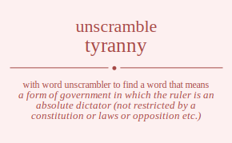

The word found after unscrambling tyranny means that a form of government in which the ruler is an absolute dictator (not restricted by a constitution or laws or opposition etc.), dominance through threat of punishment and violence, .

The word found after unscrambling tyranny means that a form of government in which the ruler is an absolute dictator (not restricted by a constitution or laws or opposition etc.), dominance through threat of punishment and violence, .
You can also find solutions for different combinations of letters in tyranny like tyranny tyranyn tyranny tyranyn tyraynn tyraynn tyrnany tyrnayn tyrnnay tyrnnya tyrnyan tyrnyna tyrnany tyrnayn tyrnnay tyrnnya tyrnyan tyrnyna tyryann tyryann tyrynan tyrynna tyrynan tyrynna tyarnny tyarnyn tyarnny tyarnyn tyarynn tyarynn tyanrny tyanryn tyannry tyannyr tyanyrn tyanynr tyanrny tyanryn tyannry tyannyr tyanyrn tyanynr tyayrnn tyayrnn tyaynrn tyaynnr tyaynrn tyaynnr tynrany tynrayn tynrnay tynrnya tynryan tynryna tynarny tynaryn tynanry tynanyr tynayrn tynaynr tynnray tynnrya tynnary tynnayr tynnyra tynnyar tynyran tynyrna tynyarn tynyanr tynynra tynynar tynrany tynrayn tynrnay tynrnya tynryan tynryna tynarny tynaryn tynanry tynanyr tynayrn tynaynr tynnray tynnrya tynnary tynnayr tynnyra tynnyar tynyran tynyrna tynyarn tynyanr tynynra tynynar tyyrann tyyrann tyyrnan tyyrnna tyyrnan tyyrnna tyyarnn tyyarnn tyyanrn tyyannr tyyanrn tyyannr tyynran tyynrna tyynarn tyynanr tyynnra tyynnar tyynran tyynrna tyynarn tyynanr tyynnra tyynnar tryanny tryanyn tryanny tryanyn tryaynn tryaynn trynany trynayn trynnay trynnya trynyan trynyna trynany trynayn trynnay trynnya trynyan trynyna tryyann tryyann tryynan tryynna tryynan tryynna traynny traynyn traynny traynyn trayynn trayynn tranyny tranyyn trannyy trannyy tranyyn tranyny tranyny tranyyn trannyy trannyy tranyyn tranyny trayynn trayynn traynyn traynny traynyn traynny trnyany trnyayn trnynay trnynya trnyyan trnyyna trnayny trnayyn trnanyy trnanyy trnayyn trnayny trnnyay trnnyya trnnayy trnnayy trnnyya trnnyay trnyyan trnyyna trnyayn trnyany trnynya trnynay trnyany trnyayn trnynay trnynya trnyyan trnyyna trnayny trnayyn trnanyy trnanyy trnayyn trnayny trnnyay trnnyya trnnayy trnnayy trnnyya trnnyay trnyyan trnyyna trnyayn trnyany trnynya trnynay tryyann tryyann tryynan tryynna tryynan tryynna tryaynn tryaynn tryanyn tryanny tryanyn tryanny trynyan trynyna trynayn trynany trynnya trynnay trynyan trynyna trynayn trynany trynnya trynnay tayrnny tayrnyn tayrnny tayrnyn tayrynn tayrynn taynrny taynryn taynnry taynnyr taynyrn taynynr taynrny taynryn taynnry taynnyr taynyrn taynynr tayyrnn tayyrnn tayynrn tayynnr tayynrn tayynnr tarynny tarynyn tarynny tarynyn taryynn taryynn tarnyny tarnyyn tarnnyy tarnnyy tarnyyn tarnyny tarnyny tarnyyn tarnnyy tarnnyy tarnyyn tarnyny taryynn taryynn tarynyn tarynny tarynyn tarynny tanyrny tanyryn tanynry tanynyr tanyyrn tanyynr tanryny tanryyn tanrnyy tanrnyy tanryyn tanryny tannyry tannyyr tannryy tannryy tannyyr tannyry tanyyrn tanyynr tanyryn tanyrny tanynyr tanynry tanyrny tanyryn tanynry tanynyr tanyyrn tanyynr tanryny tanryyn tanrnyy tanrnyy tanryyn tanryny tannyry tannyyr tannryy tannryy tannyyr tannyry tanyyrn tanyynr tanyryn tanyrny tanynyr tanynry tayyrnn tayyrnn tayynrn tayynnr tayynrn tayynnr tayrynn tayrynn tayrnyn tayrnny tayrnyn tayrnny taynyrn taynynr taynryn taynrny taynnyr taynnry taynyrn taynynr taynryn taynrny taynnyr taynnry tnyrany tnyrayn tnyrnay tnyrnya tnyryan tnyryna tnyarny tnyaryn tnyanry tnyanyr tnyayrn tnyaynr tnynray tnynrya tnynary tnynayr tnynyra tnynyar tnyyran tnyyrna tnyyarn tnyyanr tnyynra tnyynar tnryany tnryayn tnrynay tnrynya tnryyan tnryyna tnrayny tnrayyn tnranyy tnranyy tnrayyn tnrayny tnrnyay tnrnyya tnrnayy tnrnayy tnrnyya tnrnyay tnryyan tnryyna tnryayn tnryany tnrynya tnrynay tnayrny tnayryn tnaynry tnaynyr tnayyrn tnayynr tnaryny tnaryyn tnarnyy tnarnyy tnaryyn tnaryny tnanyry tnanyyr tnanryy tnanryy tnanyyr tnanyry tnayyrn tnayynr tnayryn tnayrny tnaynyr tnaynry tnnyray tnnyrya tnnyary tnnyayr tnnyyra tnnyyar tnnryay tnnryya tnnrayy tnnrayy tnnryya tnnryay tnnayry tnnayyr tnnaryy tnnaryy tnnayyr tnnayry tnnyyra tnnyyar tnnyrya tnnyray tnnyayr tnnyary tnyyran tnyyrna tnyyarn tnyyanr tnyynra tnyynar tnyryan tnyryna tnyrayn tnyrany tnyrnya tnyrnay tnyayrn tnyaynr tnyaryn tnyarny tnyanyr tnyanry tnynyra tnynyar tnynrya tnynray tnynayr tnynary tnyrany tnyrayn tnyrnay tnyrnya tnyryan tnyryna tnyarny tnyaryn tnyanry tnyanyr tnyayrn tnyaynr tnynray tnynrya tnynary tnynayr tnynyra tnynyar tnyyran tnyyrna tnyyarn tnyyanr tnyynra tnyynar tnryany tnryayn tnrynay tnrynya tnryyan tnryyna tnrayny tnrayyn tnranyy tnranyy tnrayyn tnrayny tnrnyay tnrnyya tnrnayy tnrnayy tnrnyya tnrnyay tnryyan tnryyna tnryayn tnryany tnrynya tnrynay tnayrny tnayryn tnaynry tnaynyr tnayyrn tnayynr tnaryny tnaryyn tnarnyy tnarnyy tnaryyn tnaryny tnanyry tnanyyr tnanryy tnanryy tnanyyr tnanyry tnayyrn tnayynr tnayryn tnayrny tnaynyr tnaynry tnnyray tnnyrya tnnyary tnnyayr tnnyyra tnnyyar tnnryay tnnryya tnnrayy tnnrayy tnnryya tnnryay tnnayry tnnayyr tnnaryy tnnaryy tnnayyr tnnayry tnnyyra tnnyyar tnnyrya tnnyray tnnyayr tnnyary tnyyran tnyyrna tnyyarn tnyyanr tnyynra tnyynar tnyryan tnyryna tnyrayn tnyrany tnyrnya tnyrnay tnyayrn tnyaynr tnyaryn tnyarny tnyanyr tnyanry tnynyra tnynyar tnynrya tnynray tnynayr tnynary tyyrann tyyrann tyyrnan tyyrnna tyyrnan tyyrnna tyyarnn tyyarnn tyyanrn tyyannr tyyanrn tyyannr tyynran tyynrna tyynarn tyynanr tyynnra tyynnar tyynran tyynrna tyynarn tyynanr tyynnra tyynnar tyryann tyryann tyrynan tyrynna tyrynan tyrynna tyraynn tyraynn tyranyn tyranny tyranyn tyranny tyrnyan tyrnyna tyrnayn tyrnany tyrnnya tyrnnay tyrnyan tyrnyna tyrnayn tyrnany tyrnnya tyrnnay tyayrnn tyayrnn tyaynrn tyaynnr tyaynrn tyaynnr tyarynn tyarynn tyarnyn tyarnny tyarnyn tyarnny tyanyrn tyanynr tyanryn tyanrny tyannyr tyannry tyanyrn tyanynr tyanryn tyanrny tyannyr tyannry tynyran tynyrna tynyarn tynyanr tynynra tynynar tynryan tynryna tynrayn tynrany tynrnya tynrnay tynayrn tynaynr tynaryn tynarny tynanyr tynanry tynnyra tynnyar tynnrya tynnray tynnayr tynnary tynyran tynyrna tynyarn tynyanr tynynra tynynar tynryan tynryna tynrayn tynrany tynrnya tynrnay tynayrn tynaynr tynaryn tynarny tynanyr tynanry tynnyra tynnyar tynnrya tynnray tynnayr tynnary ytranny ytranyn ytranny ytranyn ytraynn ytraynn ytrnany ytrnayn ytrnnay ytrnnya ytrnyan ytrnyna ytrnany ytrnayn ytrnnay ytrnnya ytrnyan ytrnyna ytryann ytryann ytrynan ytrynna ytrynan ytrynna ytarnny ytarnyn ytarnny ytarnyn ytarynn ytarynn ytanrny ytanryn ytannry ytannyr ytanyrn ytanynr ytanrny ytanryn ytannry ytannyr ytanyrn ytanynr ytayrnn ytayrnn ytaynrn ytaynnr ytaynrn ytaynnr ytnrany ytnrayn ytnrnay ytnrnya ytnryan ytnryna ytnarny ytnaryn ytnanry ytnanyr ytnayrn ytnaynr ytnnray ytnnrya ytnnary ytnnayr ytnnyra ytnnyar ytnyran ytnyrna ytnyarn ytnyanr ytnynra ytnynar ytnrany ytnrayn ytnrnay ytnrnya ytnryan ytnryna ytnarny ytnaryn ytnanry ytnanyr ytnayrn ytnaynr ytnnray ytnnrya ytnnary ytnnayr ytnnyra ytnnyar ytnyran ytnyrna ytnyarn ytnyanr ytnynra ytnynar ytyrann ytyrann ytyrnan ytyrnna ytyrnan ytyrnna ytyarnn ytyarnn ytyanrn ytyannr ytyanrn ytyannr ytynran ytynrna ytynarn ytynanr ytynnra ytynnar ytynran ytynrna ytynarn ytynanr ytynnra ytynnar yrtanny yrtanyn yrtanny yrtanyn yrtaynn yrtaynn yrtnany yrtnayn yrtnnay yrtnnya yrtnyan yrtnyna yrtnany yrtnayn yrtnnay yrtnnya yrtnyan yrtnyna yrtyann yrtyann yrtynan yrtynna yrtynan yrtynna yratnny yratnyn yratnny yratnyn yratynn yratynn yrantny yrantyn yrannty yrannyt yranytn yranynt yrantny yrantyn yrannty yrannyt yranytn yranynt yraytnn yraytnn yrayntn yraynnt yrayntn yraynnt yrntany yrntayn yrntnay yrntnya yrntyan yrntyna yrnatny yrnatyn yrnanty yrnanyt yrnaytn yrnaynt yrnntay yrnntya yrnnaty yrnnayt yrnnyta yrnnyat yrnytan yrnytna yrnyatn yrnyant yrnynta yrnynat yrntany yrntayn yrntnay yrntnya yrntyan yrntyna yrnatny yrnatyn yrnanty yrnanyt yrnaytn yrnaynt yrnntay yrnntya yrnnaty yrnnayt yrnnyta yrnnyat yrnytan yrnytna yrnyatn yrnyant yrnynta yrnynat yrytann yrytann yrytnan yrytnna yrytnan yrytnna yryatnn yryatnn yryantn yryannt yryantn yryannt yryntan yryntna yrynatn yrynant yrynnta yrynnat yryntan yryntna yrynatn yrynant yrynnta yrynnat yatrnny yatrnyn yatrnny yatrnyn yatrynn yatrynn yatnrny yatnryn yatnnry yatnnyr yatnyrn yatnynr yatnrny yatnryn yatnnry yatnnyr yatnyrn yatnynr yatyrnn yatyrnn yatynrn yatynnr yatynrn yatynnr yartnny yartnyn yartnny yartnyn yartynn yartynn yarntny yarntyn yarnnty yarnnyt yarnytn yarnynt yarntny yarntyn yarnnty yarnnyt yarnytn yarnynt yarytnn yarytnn yaryntn yarynnt yaryntn yarynnt yantrny yantryn yantnry yantnyr yantyrn yantynr yanrtny yanrtyn yanrnty yanrnyt yanrytn yanrynt yanntry yanntyr yannrty yannryt yannytr yannyrt yanytrn yanytnr yanyrtn yanyrnt yanyntr yanynrt yantrny yantryn yantnry yantnyr yantyrn yantynr yanrtny yanrtyn yanrnty yanrnyt yanrytn yanrynt yanntry yanntyr yannrty yannryt yannytr yannyrt yanytrn yanytnr yanyrtn yanyrnt yanyntr yanynrt yaytrnn yaytrnn yaytnrn yaytnnr yaytnrn yaytnnr yayrtnn yayrtnn yayrntn yayrnnt yayrntn yayrnnt yayntrn yayntnr yaynrtn yaynrnt yaynntr yaynnrt yayntrn yayntnr yaynrtn yaynrnt yaynntr yaynnrt yntrany yntrayn yntrnay yntrnya yntryan yntryna yntarny yntaryn yntanry yntanyr yntayrn yntaynr yntnray yntnrya yntnary yntnayr yntnyra yntnyar yntyran yntyrna yntyarn yntyanr yntynra yntynar ynrtany ynrtayn ynrtnay ynrtnya ynrtyan ynrtyna ynratny ynratyn ynranty ynranyt ynraytn ynraynt ynrntay ynrntya ynrnaty ynrnayt ynrnyta ynrnyat ynrytan ynrytna ynryatn ynryant ynrynta ynrynat ynatrny ynatryn ynatnry ynatnyr ynatyrn ynatynr ynartny ynartyn ynarnty ynarnyt ynarytn ynarynt ynantry ynantyr ynanrty ynanryt ynanytr ynanyrt ynaytrn ynaytnr ynayrtn ynayrnt ynayntr ynaynrt ynntray ynntrya ynntary ynntayr ynntyra ynntyar ynnrtay ynnrtya ynnraty ynnrayt ynnryta ynnryat ynnatry ynnatyr ynnarty ynnaryt ynnaytr ynnayrt ynnytra ynnytar ynnyrta ynnyrat ynnyatr ynnyart ynytran ynytrna ynytarn ynytanr ynytnra ynytnar ynyrtan ynyrtna ynyratn ynyrant ynyrnta ynyrnat ynyatrn ynyatnr ynyartn ynyarnt ynyantr ynyanrt ynyntra ynyntar ynynrta ynynrat ynynatr ynynart yntrany yntrayn yntrnay yntrnya yntryan yntryna yntarny yntaryn yntanry yntanyr yntayrn yntaynr yntnray yntnrya yntnary yntnayr yntnyra yntnyar yntyran yntyrna yntyarn yntyanr yntynra yntynar ynrtany ynrtayn ynrtnay ynrtnya ynrtyan ynrtyna ynratny ynratyn ynranty ynranyt ynraytn ynraynt ynrntay ynrntya ynrnaty ynrnayt ynrnyta ynrnyat ynrytan ynrytna ynryatn ynryant ynrynta ynrynat ynatrny ynatryn ynatnry ynatnyr ynatyrn ynatynr ynartny ynartyn ynarnty ynarnyt ynarytn ynarynt ynantry ynantyr ynanrty ynanryt ynanytr ynanyrt ynaytrn ynaytnr ynayrtn ynayrnt ynayntr ynaynrt ynntray ynntrya ynntary ynntayr ynntyra ynntyar ynnrtay ynnrtya ynnraty ynnrayt ynnryta ynnryat ynnatry ynnatyr ynnarty ynnaryt ynnaytr ynnayrt ynnytra ynnytar ynnyrta ynnyrat ynnyatr ynnyart ynytran ynytrna ynytarn ynytanr ynytnra ynytnar ynyrtan ynyrtna ynyratn ynyrant ynyrnta ynyrnat ynyatrn ynyatnr ynyartn ynyarnt ynyantr ynyanrt ynyntra ynyntar ynynrta ynynrat ynynatr ynynart yytrann yytrann yytrnan yytrnna yytrnan yytrnna yytarnn yytarnn yytanrn yytannr yytanrn yytannr yytnran yytnrna yytnarn yytnanr yytnnra yytnnar yytnran yytnrna yytnarn yytnanr yytnnra yytnnar yyrtann yyrtann yyrtnan yyrtnna yyrtnan yyrtnna yyratnn yyratnn yyrantn yyrannt yyrantn yyrannt yyrntan yyrntna yyrnatn yyrnant yyrnnta yyrnnat yyrntan yyrntna yyrnatn yyrnant yyrnnta yyrnnat yyatrnn yyatrnn yyatnrn yyatnnr yyatnrn yyatnnr yyartnn yyartnn yyarntn yyarnnt yyarntn yyarnnt yyantrn yyantnr yyanrtn yyanrnt yyanntr yyannrt yyantrn yyantnr yyanrtn yyanrnt yyanntr yyannrt yyntran yyntrna yyntarn yyntanr yyntnra yyntnar yynrtan yynrtna yynratn yynrant yynrnta yynrnat yynatrn yynatnr yynartn yynarnt yynantr yynanrt yynntra yynntar yynnrta yynnrat yynnatr yynnart yyntran yyntrna yyntarn yyntanr yyntnra yyntnar yynrtan yynrtna yynratn yynrant yynrnta yynrnat yynatrn yynatnr yynartn yynarnt yynantr yynanrt yynntra yynntar yynnrta yynnrat yynnatr yynnart rtyanny rtyanyn rtyanny rtyanyn rtyaynn rtyaynn rtynany rtynayn rtynnay rtynnya rtynyan rtynyna rtynany rtynayn rtynnay rtynnya rtynyan rtynyna rtyyann rtyyann rtyynan rtyynna rtyynan rtyynna rtaynny rtaynyn rtaynny rtaynyn rtayynn rtayynn rtanyny rtanyyn rtannyy rtannyy rtanyyn rtanyny rtanyny rtanyyn rtannyy rtannyy rtanyyn rtanyny rtayynn rtayynn rtaynyn rtaynny rtaynyn rtaynny rtnyany rtnyayn rtnynay rtnynya rtnyyan rtnyyna rtnayny rtnayyn rtnanyy rtnanyy rtnayyn rtnayny rtnnyay rtnnyya rtnnayy rtnnayy rtnnyya rtnnyay rtnyyan rtnyyna rtnyayn rtnyany rtnynya rtnynay rtnyany rtnyayn rtnynay rtnynya rtnyyan rtnyyna rtnayny rtnayyn rtnanyy rtnanyy rtnayyn rtnayny rtnnyay rtnnyya rtnnayy rtnnayy rtnnyya rtnnyay rtnyyan rtnyyna rtnyayn rtnyany rtnynya rtnynay rtyyann rtyyann rtyynan rtyynna rtyynan rtyynna rtyaynn rtyaynn rtyanyn rtyanny rtyanyn rtyanny rtynyan rtynyna rtynayn rtynany rtynnya rtynnay rtynyan rtynyna rtynayn rtynany rtynnya rtynnay rytanny rytanyn rytanny rytanyn rytaynn rytaynn rytnany rytnayn rytnnay rytnnya rytnyan rytnyna rytnany rytnayn rytnnay rytnnya rytnyan rytnyna rytyann rytyann rytynan rytynna rytynan rytynna ryatnny ryatnyn ryatnny ryatnyn ryatynn ryatynn ryantny ryantyn ryannty ryannyt ryanytn ryanynt ryantny ryantyn ryannty ryannyt ryanytn ryanynt ryaytnn ryaytnn ryayntn ryaynnt ryayntn ryaynnt ryntany ryntayn ryntnay ryntnya ryntyan ryntyna rynatny rynatyn rynanty rynanyt rynaytn rynaynt rynntay rynntya rynnaty rynnayt rynnyta rynnyat rynytan rynytna rynyatn rynyant rynynta rynynat ryntany ryntayn ryntnay ryntnya ryntyan ryntyna rynatny rynatyn rynanty rynanyt rynaytn rynaynt rynntay rynntya rynnaty rynnayt rynnyta rynnyat rynytan rynytna rynyatn rynyant rynynta rynynat ryytann ryytann ryytnan ryytnna ryytnan ryytnna ryyatnn ryyatnn ryyantn ryyannt ryyantn ryyannt ryyntan ryyntna ryynatn ryynant ryynnta ryynnat ryyntan ryyntna ryynatn ryynant ryynnta ryynnat ratynny ratynyn ratynny ratynyn ratyynn ratyynn ratnyny ratnyyn ratnnyy ratnnyy ratnyyn ratnyny ratnyny ratnyyn ratnnyy ratnnyy ratnyyn ratnyny ratyynn ratyynn ratynyn ratynny ratynyn ratynny raytnny raytnyn raytnny raytnyn raytynn raytynn rayntny rayntyn raynnty raynnyt raynytn raynynt rayntny rayntyn raynnty raynnyt raynytn raynynt rayytnn rayytnn rayyntn rayynnt rayyntn rayynnt rantyny rantyyn rantnyy rantnyy rantyyn rantyny ranytny ranytyn ranynty ranynyt ranyytn ranyynt ranntyy ranntyy rannyty rannyyt rannyty rannyyt ranytyn ranytny ranyytn ranyynt ranynty ranynyt rantyny rantyyn rantnyy rantnyy rantyyn rantyny ranytny ranytyn ranynty ranynyt ranyytn ranyynt ranntyy ranntyy rannyty rannyyt rannyty rannyyt ranytyn ranytny ranyytn ranyynt ranynty ranynyt raytynn raytynn raytnyn raytnny raytnyn raytnny rayytnn rayytnn rayyntn rayynnt rayyntn rayynnt rayntyn rayntny raynytn raynynt raynnty raynnyt rayntyn rayntny raynytn raynynt raynnty raynnyt rntyany rntyayn rntynay rntynya rntyyan rntyyna rntayny rntayyn rntanyy rntanyy rntayyn rntayny rntnyay rntnyya rntnayy rntnayy rntnyya rntnyay rntyyan rntyyna rntyayn rntyany rntynya rntynay rnytany rnytayn rnytnay rnytnya rnytyan rnytyna rnyatny rnyatyn rnyanty rnyanyt rnyaytn rnyaynt rnyntay rnyntya rnynaty rnynayt rnynyta rnynyat rnyytan rnyytna rnyyatn rnyyant rnyynta rnyynat rnatyny rnatyyn rnatnyy rnatnyy rnatyyn rnatyny rnaytny rnaytyn rnaynty rnaynyt rnayytn rnayynt rnantyy rnantyy rnanyty rnanyyt rnanyty rnanyyt rnaytyn rnaytny rnayytn rnayynt rnaynty rnaynyt rnntyay rnntyya rnntayy rnntayy rnntyya rnntyay rnnytay rnnytya rnnyaty rnnyayt rnnyyta rnnyyat rnnatyy rnnatyy rnnayty rnnayyt rnnayty rnnayyt rnnytya rnnytay rnnyyta rnnyyat rnnyaty rnnyayt rnytyan rnytyna rnytayn rnytany rnytnya rnytnay rnyytan rnyytna rnyyatn rnyyant rnyynta rnyynat rnyatyn rnyatny rnyaytn rnyaynt rnyanty rnyanyt rnyntya rnyntay rnynyta rnynyat rnynaty rnynayt rntyany rntyayn rntynay rntynya rntyyan rntyyna rntayny rntayyn rntanyy rntanyy rntayyn rntayny rntnyay rntnyya rntnayy rntnayy rntnyya rntnyay rntyyan rntyyna rntyayn rntyany rntynya rntynay rnytany rnytayn rnytnay rnytnya rnytyan rnytyna rnyatny rnyatyn rnyanty rnyanyt rnyaytn rnyaynt rnyntay rnyntya rnynaty rnynayt rnynyta rnynyat rnyytan rnyytna rnyyatn rnyyant rnyynta rnyynat rnatyny rnatyyn rnatnyy rnatnyy rnatyyn rnatyny rnaytny rnaytyn rnaynty rnaynyt rnayytn rnayynt rnantyy rnantyy rnanyty rnanyyt rnanyty rnanyyt rnaytyn rnaytny rnayytn rnayynt rnaynty rnaynyt rnntyay rnntyya rnntayy rnntayy rnntyya rnntyay rnnytay rnnytya rnnyaty rnnyayt rnnyyta rnnyyat rnnatyy rnnatyy rnnayty rnnayyt rnnayty rnnayyt rnnytya rnnytay rnnyyta rnnyyat rnnyaty rnnyayt rnytyan rnytyna rnytayn rnytany rnytnya rnytnay rnyytan rnyytna rnyyatn rnyyant rnyynta rnyynat rnyatyn rnyatny rnyaytn rnyaynt rnyanty rnyanyt rnyntya rnyntay rnynyta rnynyat rnynaty rnynayt rytyann rytyann rytynan rytynna rytynan rytynna rytaynn rytaynn rytanyn rytanny rytanyn rytanny rytnyan rytnyna rytnayn rytnany rytnnya rytnnay rytnyan rytnyna rytnayn rytnany rytnnya rytnnay ryytann ryytann ryytnan ryytnna ryytnan ryytnna ryyatnn ryyatnn ryyantn ryyannt ryyantn ryyannt ryyntan ryyntna ryynatn ryynant ryynnta ryynnat ryyntan ryyntna ryynatn ryynant ryynnta ryynnat ryatynn ryatynn ryatnyn ryatnny ryatnyn ryatnny ryaytnn ryaytnn ryayntn ryaynnt ryayntn ryaynnt ryantyn ryantny ryanytn ryanynt ryannty ryannyt ryantyn ryantny ryanytn ryanynt ryannty ryannyt ryntyan ryntyna ryntayn ryntany ryntnya ryntnay rynytan rynytna rynyatn rynyant rynynta rynynat rynatyn rynatny rynaytn rynaynt rynanty rynanyt rynntya rynntay rynnyta rynnyat rynnaty rynnayt ryntyan ryntyna ryntayn ryntany ryntnya ryntnay rynytan rynytna rynyatn rynyant rynynta rynynat rynatyn rynatny rynaytn rynaynt rynanty rynanyt rynntya rynntay rynnyta rynnyat rynnaty rynnayt atyrnny atyrnyn atyrnny atyrnyn atyrynn atyrynn atynrny atynryn atynnry atynnyr atynyrn atynynr atynrny atynryn atynnry atynnyr atynyrn atynynr atyyrnn atyyrnn atyynrn atyynnr atyynrn atyynnr atrynny atrynyn atrynny atrynyn atryynn atryynn atrnyny atrnyyn atrnnyy atrnnyy atrnyyn atrnyny atrnyny atrnyyn atrnnyy atrnnyy atrnyyn atrnyny atryynn atryynn atrynyn atrynny atrynyn atrynny atnyrny atnyryn atnynry atnynyr atnyyrn atnyynr atnryny atnryyn atnrnyy atnrnyy atnryyn atnryny atnnyry atnnyyr atnnryy atnnryy atnnyyr atnnyry atnyyrn atnyynr atnyryn atnyrny atnynyr atnynry atnyrny atnyryn atnynry atnynyr atnyyrn atnyynr atnryny atnryyn atnrnyy atnrnyy atnryyn atnryny atnnyry atnnyyr atnnryy atnnryy atnnyyr atnnyry atnyyrn atnyynr atnyryn atnyrny atnynyr atnynry atyyrnn atyyrnn atyynrn atyynnr atyynrn atyynnr atyrynn atyrynn atyrnyn atyrnny atyrnyn atyrnny atynyrn atynynr atynryn atynrny atynnyr atynnry atynyrn atynynr atynryn atynrny atynnyr atynnry aytrnny aytrnyn aytrnny aytrnyn aytrynn aytrynn aytnrny aytnryn aytnnry aytnnyr aytnyrn aytnynr aytnrny aytnryn aytnnry aytnnyr aytnyrn aytnynr aytyrnn aytyrnn aytynrn aytynnr aytynrn aytynnr ayrtnny ayrtnyn ayrtnny ayrtnyn ayrtynn ayrtynn ayrntny ayrntyn ayrnnty ayrnnyt ayrnytn ayrnynt ayrntny ayrntyn ayrnnty ayrnnyt ayrnytn ayrnynt ayrytnn ayrytnn ayryntn ayrynnt ayryntn ayrynnt ayntrny ayntryn ayntnry ayntnyr ayntyrn ayntynr aynrtny aynrtyn aynrnty aynrnyt aynrytn aynrynt aynntry aynntyr aynnrty aynnryt aynnytr aynnyrt aynytrn aynytnr aynyrtn aynyrnt aynyntr aynynrt ayntrny ayntryn ayntnry ayntnyr ayntyrn ayntynr aynrtny aynrtyn aynrnty aynrnyt aynrytn aynrynt aynntry aynntyr aynnrty aynnryt aynnytr aynnyrt aynytrn aynytnr aynyrtn aynyrnt aynyntr aynynrt ayytrnn ayytrnn ayytnrn ayytnnr ayytnrn ayytnnr ayyrtnn ayyrtnn ayyrntn ayyrnnt ayyrntn ayyrnnt ayyntrn ayyntnr ayynrtn ayynrnt ayynntr ayynnrt ayyntrn ayyntnr ayynrtn ayynrnt ayynntr ayynnrt artynny artynyn artynny artynyn artyynn artyynn artnyny artnyyn artnnyy artnnyy artnyyn artnyny artnyny artnyyn artnnyy artnnyy artnyyn artnyny artyynn artyynn artynyn artynny artynyn artynny arytnny arytnyn arytnny arytnyn arytynn arytynn aryntny aryntyn arynnty arynnyt arynytn arynynt aryntny aryntyn arynnty arynnyt arynytn arynynt aryytnn aryytnn aryyntn aryynnt aryyntn aryynnt arntyny arntyyn arntnyy arntnyy arntyyn arntyny arnytny arnytyn arnynty arnynyt arnyytn arnyynt arnntyy arnntyy arnnyty arnnyyt arnnyty arnnyyt arnytyn arnytny arnyytn arnyynt arnynty arnynyt arntyny arntyyn arntnyy arntnyy arntyyn arntyny arnytny arnytyn arnynty arnynyt arnyytn arnyynt arnntyy arnntyy arnnyty arnnyyt arnnyty arnnyyt arnytyn arnytny arnyytn arnyynt arnynty arnynyt arytynn arytynn arytnyn arytnny arytnyn arytnny aryytnn aryytnn aryyntn aryynnt aryyntn aryynnt aryntyn aryntny arynytn arynynt arynnty arynnyt aryntyn aryntny arynytn arynynt arynnty arynnyt antyrny antyryn antynry antynyr antyyrn antyynr antryny antryyn antrnyy antrnyy antryyn antryny antnyry antnyyr antnryy antnryy antnyyr antnyry antyyrn antyynr antyryn antyrny antynyr antynry anytrny anytryn anytnry anytnyr anytyrn anytynr anyrtny anyrtyn anyrnty anyrnyt anyrytn anyrynt anyntry anyntyr anynrty anynryt anynytr anynyrt anyytrn anyytnr anyyrtn anyyrnt anyyntr anyynrt anrtyny anrtyyn anrtnyy anrtnyy anrtyyn anrtyny anrytny anrytyn anrynty anrynyt anryytn anryynt anrntyy anrntyy anrnyty anrnyyt anrnyty anrnyyt anrytyn anrytny anryytn anryynt anrynty anrynyt anntyry anntyyr anntryy anntryy anntyyr anntyry annytry annytyr annyrty annyryt annyytr annyyrt annrtyy annrtyy annryty annryyt annryty annryyt annytyr annytry annyytr annyyrt annyrty annyryt anytyrn anytynr anytryn anytrny anytnyr anytnry anyytrn anyytnr anyyrtn anyyrnt anyyntr anyynrt anyrtyn anyrtny anyrytn anyrynt anyrnty anyrnyt anyntyr anyntry anynytr anynyrt anynrty anynryt antyrny antyryn antynry antynyr antyyrn antyynr antryny antryyn antrnyy antrnyy antryyn antryny antnyry antnyyr antnryy antnryy antnyyr antnyry antyyrn antyynr antyryn antyrny antynyr antynry anytrny anytryn anytnry anytnyr anytyrn anytynr anyrtny anyrtyn anyrnty anyrnyt anyrytn anyrynt anyntry anyntyr anynrty anynryt anynytr anynyrt anyytrn anyytnr anyyrtn anyyrnt anyyntr anyynrt anrtyny anrtyyn anrtnyy anrtnyy anrtyyn anrtyny anrytny anrytyn anrynty anrynyt anryytn anryynt anrntyy anrntyy anrnyty anrnyyt anrnyty anrnyyt anrytyn anrytny anryytn anryynt anrynty anrynyt anntyry anntyyr anntryy anntryy anntyyr anntyry annytry annytyr annyrty annyryt annyytr annyyrt annrtyy annrtyy annryty annryyt annryty annryyt annytyr annytry annyytr annyyrt annyrty annyryt anytyrn anytynr anytryn anytrny anytnyr anytnry anyytrn anyytnr anyyrtn anyyrnt anyyntr anyynrt anyrtyn anyrtny anyrytn anyrynt anyrnty anyrnyt anyntyr anyntry anynytr anynyrt anynrty anynryt aytyrnn aytyrnn aytynrn aytynnr aytynrn aytynnr aytrynn aytrynn aytrnyn aytrnny aytrnyn aytrnny aytnyrn aytnynr aytnryn aytnrny aytnnyr aytnnry aytnyrn aytnynr aytnryn aytnrny aytnnyr aytnnry ayytrnn ayytrnn ayytnrn ayytnnr ayytnrn ayytnnr ayyrtnn ayyrtnn ayyrntn ayyrnnt ayyrntn ayyrnnt ayyntrn ayyntnr ayynrtn ayynrnt ayynntr ayynnrt ayyntrn ayyntnr ayynrtn ayynrnt ayynntr ayynnrt ayrtynn ayrtynn ayrtnyn ayrtnny ayrtnyn ayrtnny ayrytnn ayrytnn ayryntn ayrynnt ayryntn ayrynnt ayrntyn ayrntny ayrnytn ayrnynt ayrnnty ayrnnyt ayrntyn ayrntny ayrnytn ayrnynt ayrnnty ayrnnyt ayntyrn ayntynr ayntryn ayntrny ayntnyr ayntnry aynytrn aynytnr aynyrtn aynyrnt aynyntr aynynrt aynrtyn aynrtny aynrytn aynrynt aynrnty aynrnyt aynntyr aynntry aynnytr aynnyrt aynnrty aynnryt ayntyrn ayntynr ayntryn ayntrny ayntnyr ayntnry aynytrn aynytnr aynyrtn aynyrnt aynyntr aynynrt aynrtyn aynrtny aynrytn aynrynt aynrnty aynrnyt aynntyr aynntry aynnytr aynnyrt aynnrty aynnryt ntyrany ntyrayn ntyrnay ntyrnya ntyryan ntyryna ntyarny ntyaryn ntyanry ntyanyr ntyayrn ntyaynr ntynray ntynrya ntynary ntynayr ntynyra ntynyar ntyyran ntyyrna ntyyarn ntyyanr ntyynra ntyynar ntryany ntryayn ntrynay ntrynya ntryyan ntryyna ntrayny ntrayyn ntranyy ntranyy ntrayyn ntrayny ntrnyay ntrnyya ntrnayy ntrnayy ntrnyya ntrnyay ntryyan ntryyna ntryayn ntryany ntrynya ntrynay ntayrny ntayryn ntaynry ntaynyr ntayyrn ntayynr ntaryny ntaryyn ntarnyy ntarnyy ntaryyn ntaryny ntanyry ntanyyr ntanryy ntanryy ntanyyr ntanyry ntayyrn ntayynr ntayryn ntayrny ntaynyr ntaynry ntnyray ntnyrya ntnyary ntnyayr ntnyyra ntnyyar ntnryay ntnryya ntnrayy ntnrayy ntnryya ntnryay ntnayry ntnayyr ntnaryy ntnaryy ntnayyr ntnayry ntnyyra ntnyyar ntnyrya ntnyray ntnyayr ntnyary ntyyran ntyyrna ntyyarn ntyyanr ntyynra ntyynar ntyryan ntyryna ntyrayn ntyrany ntyrnya ntyrnay ntyayrn ntyaynr ntyaryn ntyarny ntyanyr ntyanry ntynyra ntynyar ntynrya ntynray ntynayr ntynary nytrany nytrayn nytrnay nytrnya nytryan nytryna nytarny nytaryn nytanry nytanyr nytayrn nytaynr nytnray nytnrya nytnary nytnayr nytnyra nytnyar nytyran nytyrna nytyarn nytyanr nytynra nytynar nyrtany nyrtayn nyrtnay nyrtnya nyrtyan nyrtyna nyratny nyratyn nyranty nyranyt nyraytn nyraynt nyrntay nyrntya nyrnaty nyrnayt nyrnyta nyrnyat nyrytan nyrytna nyryatn nyryant nyrynta nyrynat nyatrny nyatryn nyatnry nyatnyr nyatyrn nyatynr nyartny nyartyn nyarnty nyarnyt nyarytn nyarynt nyantry nyantyr nyanrty nyanryt nyanytr nyanyrt nyaytrn nyaytnr nyayrtn nyayrnt nyayntr nyaynrt nyntray nyntrya nyntary nyntayr nyntyra nyntyar nynrtay nynrtya nynraty nynrayt nynryta nynryat nynatry nynatyr nynarty nynaryt nynaytr nynayrt nynytra nynytar nynyrta nynyrat nynyatr nynyart nyytran nyytrna nyytarn nyytanr nyytnra nyytnar nyyrtan nyyrtna nyyratn nyyrant nyyrnta nyyrnat nyyatrn nyyatnr nyyartn nyyarnt nyyantr nyyanrt nyyntra nyyntar nyynrta nyynrat nyynatr nyynart nrtyany nrtyayn nrtynay nrtynya nrtyyan nrtyyna nrtayny nrtayyn nrtanyy nrtanyy nrtayyn nrtayny nrtnyay nrtnyya nrtnayy nrtnayy nrtnyya nrtnyay nrtyyan nrtyyna nrtyayn nrtyany nrtynya nrtynay nrytany nrytayn nrytnay nrytnya nrytyan nrytyna nryatny nryatyn nryanty nryanyt nryaytn nryaynt nryntay nryntya nrynaty nrynayt nrynyta nrynyat nryytan nryytna nryyatn nryyant nryynta nryynat nratyny nratyyn nratnyy nratnyy nratyyn nratyny nraytny nraytyn nraynty nraynyt nrayytn nrayynt nrantyy nrantyy nranyty nranyyt nranyty nranyyt nraytyn nraytny nrayytn nrayynt nraynty nraynyt nrntyay nrntyya nrntayy nrntayy nrntyya nrntyay nrnytay nrnytya nrnyaty nrnyayt nrnyyta nrnyyat nrnatyy nrnatyy nrnayty nrnayyt nrnayty nrnayyt nrnytya nrnytay nrnyyta nrnyyat nrnyaty nrnyayt nrytyan nrytyna nrytayn nrytany nrytnya nrytnay nryytan nryytna nryyatn nryyant nryynta nryynat nryatyn nryatny nryaytn nryaynt nryanty nryanyt nryntya nryntay nrynyta nrynyat nrynaty nrynayt natyrny natyryn natynry natynyr natyyrn natyynr natryny natryyn natrnyy natrnyy natryyn natryny natnyry natnyyr natnryy natnryy natnyyr natnyry natyyrn natyynr natyryn natyrny natynyr natynry naytrny naytryn naytnry naytnyr naytyrn naytynr nayrtny nayrtyn nayrnty nayrnyt nayrytn nayrynt nayntry nayntyr naynrty naynryt naynytr naynyrt nayytrn nayytnr nayyrtn nayyrnt nayyntr nayynrt nartyny nartyyn nartnyy nartnyy nartyyn nartyny narytny narytyn narynty narynyt naryytn naryynt narntyy narntyy narnyty narnyyt narnyty narnyyt narytyn narytny naryytn naryynt narynty narynyt nantyry nantyyr nantryy nantryy nantyyr nantyry nanytry nanytyr nanyrty nanyryt nanyytr nanyyrt nanrtyy nanrtyy nanryty nanryyt nanryty nanryyt nanytyr nanytry nanyytr nanyyrt nanyrty nanyryt naytyrn naytynr naytryn naytrny naytnyr naytnry nayytrn nayytnr nayyrtn nayyrnt nayyntr nayynrt nayrtyn nayrtny nayrytn nayrynt nayrnty nayrnyt nayntyr nayntry naynytr naynyrt naynrty naynryt nntyray nntyrya nntyary nntyayr nntyyra nntyyar nntryay nntryya nntrayy nntrayy nntryya nntryay nntayry nntayyr nntaryy nntaryy nntayyr nntayry nntyyra nntyyar nntyrya nntyray nntyayr nntyary nnytray nnytrya nnytary nnytayr nnytyra nnytyar nnyrtay nnyrtya nnyraty nnyrayt nnyryta nnyryat nnyatry nnyatyr nnyarty nnyaryt nnyaytr nnyayrt nnyytra nnyytar nnyyrta nnyyrat nnyyatr nnyyart nnrtyay nnrtyya nnrtayy nnrtayy nnrtyya nnrtyay nnrytay nnrytya nnryaty nnryayt nnryyta nnryyat nnratyy nnratyy nnrayty nnrayyt nnrayty nnrayyt nnrytya nnrytay nnryyta nnryyat nnryaty nnryayt nnatyry nnatyyr nnatryy nnatryy nnatyyr nnatyry nnaytry nnaytyr nnayrty nnayryt nnayytr nnayyrt nnartyy nnartyy nnaryty nnaryyt nnaryty nnaryyt nnaytyr nnaytry nnayytr nnayyrt nnayrty nnayryt nnytyra nnytyar nnytrya nnytray nnytayr nnytary nnyytra nnyytar nnyyrta nnyyrat nnyyatr nnyyart nnyrtya nnyrtay nnyryta nnyryat nnyraty nnyrayt nnyatyr nnyatry nnyaytr nnyayrt nnyarty nnyaryt nytyran nytyrna nytyarn nytyanr nytynra nytynar nytryan nytryna nytrayn nytrany nytrnya nytrnay nytayrn nytaynr nytaryn nytarny nytanyr nytanry nytnyra nytnyar nytnrya nytnray nytnayr nytnary nyytran nyytrna nyytarn nyytanr nyytnra nyytnar nyyrtan nyyrtna nyyratn nyyrant nyyrnta nyyrnat nyyatrn nyyatnr nyyartn nyyarnt nyyantr nyyanrt nyyntra nyyntar nyynrta nyynrat nyynatr nyynart nyrtyan nyrtyna nyrtayn nyrtany nyrtnya nyrtnay nyrytan nyrytna nyryatn nyryant nyrynta nyrynat nyratyn nyratny nyraytn nyraynt nyranty nyranyt nyrntya nyrntay nyrnyta nyrnyat nyrnaty nyrnayt nyatyrn nyatynr nyatryn nyatrny nyatnyr nyatnry nyaytrn nyaytnr nyayrtn nyayrnt nyayntr nyaynrt nyartyn nyartny nyarytn nyarynt nyarnty nyarnyt nyantyr nyantry nyanytr nyanyrt nyanrty nyanryt nyntyra nyntyar nyntrya nyntray nyntayr nyntary nynytra nynytar nynyrta nynyrat nynyatr nynyart nynrtya nynrtay nynryta nynryat nynraty nynrayt nynatyr nynatry nynaytr nynayrt nynarty nynaryt ntyrany ntyrayn ntyrnay ntyrnya ntyryan ntyryna ntyarny ntyaryn ntyanry ntyanyr ntyayrn ntyaynr ntynray ntynrya ntynary ntynayr ntynyra ntynyar ntyyran ntyyrna ntyyarn ntyyanr ntyynra ntyynar ntryany ntryayn ntrynay ntrynya ntryyan ntryyna ntrayny ntrayyn ntranyy ntranyy ntrayyn ntrayny ntrnyay ntrnyya ntrnayy ntrnayy ntrnyya ntrnyay ntryyan ntryyna ntryayn ntryany ntrynya ntrynay ntayrny ntayryn ntaynry ntaynyr ntayyrn ntayynr ntaryny ntaryyn ntarnyy ntarnyy ntaryyn ntaryny ntanyry ntanyyr ntanryy ntanryy ntanyyr ntanyry ntayyrn ntayynr ntayryn ntayrny ntaynyr ntaynry ntnyray ntnyrya ntnyary ntnyayr ntnyyra ntnyyar ntnryay ntnryya ntnrayy ntnrayy ntnryya ntnryay ntnayry ntnayyr ntnaryy ntnaryy ntnayyr ntnayry ntnyyra ntnyyar ntnyrya ntnyray ntnyayr ntnyary ntyyran ntyyrna ntyyarn ntyyanr ntyynra ntyynar ntyryan ntyryna ntyrayn ntyrany ntyrnya ntyrnay ntyayrn ntyaynr ntyaryn ntyarny ntyanyr ntyanry ntynyra ntynyar ntynrya ntynray ntynayr ntynary nytrany nytrayn nytrnay nytrnya nytryan nytryna nytarny nytaryn nytanry nytanyr nytayrn nytaynr nytnray nytnrya nytnary nytnayr nytnyra nytnyar nytyran nytyrna nytyarn nytyanr nytynra nytynar nyrtany nyrtayn nyrtnay nyrtnya nyrtyan nyrtyna nyratny nyratyn nyranty nyranyt nyraytn nyraynt nyrntay nyrntya nyrnaty nyrnayt nyrnyta nyrnyat nyrytan nyrytna nyryatn nyryant nyrynta nyrynat nyatrny nyatryn nyatnry nyatnyr nyatyrn nyatynr nyartny nyartyn nyarnty nyarnyt nyarytn nyarynt nyantry nyantyr nyanrty nyanryt nyanytr nyanyrt nyaytrn nyaytnr nyayrtn nyayrnt nyayntr nyaynrt nyntray nyntrya nyntary nyntayr nyntyra nyntyar nynrtay nynrtya nynraty nynrayt nynryta nynryat nynatry nynatyr nynarty nynaryt nynaytr nynayrt nynytra nynytar nynyrta nynyrat nynyatr nynyart nyytran nyytrna nyytarn nyytanr nyytnra nyytnar nyyrtan nyyrtna nyyratn nyyrant nyyrnta nyyrnat nyyatrn nyyatnr nyyartn nyyarnt nyyantr nyyanrt nyyntra nyyntar nyynrta nyynrat nyynatr nyynart nrtyany nrtyayn nrtynay nrtynya nrtyyan nrtyyna nrtayny nrtayyn nrtanyy nrtanyy nrtayyn nrtayny nrtnyay nrtnyya nrtnayy nrtnayy nrtnyya nrtnyay nrtyyan nrtyyna nrtyayn nrtyany nrtynya nrtynay nrytany nrytayn nrytnay nrytnya nrytyan nrytyna nryatny nryatyn nryanty nryanyt nryaytn nryaynt nryntay nryntya nrynaty nrynayt nrynyta nrynyat nryytan nryytna nryyatn nryyant nryynta nryynat nratyny nratyyn nratnyy nratnyy nratyyn nratyny nraytny nraytyn nraynty nraynyt nrayytn nrayynt nrantyy nrantyy nranyty nranyyt nranyty nranyyt nraytyn nraytny nrayytn nrayynt nraynty nraynyt nrntyay nrntyya nrntayy nrntayy nrntyya nrntyay nrnytay nrnytya nrnyaty nrnyayt nrnyyta nrnyyat nrnatyy nrnatyy nrnayty nrnayyt nrnayty nrnayyt nrnytya nrnytay nrnyyta nrnyyat nrnyaty nrnyayt nrytyan nrytyna nrytayn nrytany nrytnya nrytnay nryytan nryytna nryyatn nryyant nryynta nryynat nryatyn nryatny nryaytn nryaynt nryanty nryanyt nryntya nryntay nrynyta nrynyat nrynaty nrynayt natyrny natyryn natynry natynyr natyyrn natyynr natryny natryyn natrnyy natrnyy natryyn natryny natnyry natnyyr natnryy natnryy natnyyr natnyry natyyrn natyynr natyryn natyrny natynyr natynry naytrny naytryn naytnry naytnyr naytyrn naytynr nayrtny nayrtyn nayrnty nayrnyt nayrytn nayrynt nayntry nayntyr naynrty naynryt naynytr naynyrt nayytrn nayytnr nayyrtn nayyrnt nayyntr nayynrt nartyny nartyyn nartnyy nartnyy nartyyn nartyny narytny narytyn narynty narynyt naryytn naryynt narntyy narntyy narnyty narnyyt narnyty narnyyt narytyn narytny naryytn naryynt narynty narynyt nantyry nantyyr nantryy nantryy nantyyr nantyry nanytry nanytyr nanyrty nanyryt nanyytr nanyyrt nanrtyy nanrtyy nanryty nanryyt nanryty nanryyt nanytyr nanytry nanyytr nanyyrt nanyrty nanyryt naytyrn naytynr naytryn naytrny naytnyr naytnry nayytrn nayytnr nayyrtn nayyrnt nayyntr nayynrt nayrtyn nayrtny nayrytn nayrynt nayrnty nayrnyt nayntyr nayntry naynytr naynyrt naynrty naynryt nntyray nntyrya nntyary nntyayr nntyyra nntyyar nntryay nntryya nntrayy nntrayy nntryya nntryay nntayry nntayyr nntaryy nntaryy nntayyr nntayry nntyyra nntyyar nntyrya nntyray nntyayr nntyary nnytray nnytrya nnytary nnytayr nnytyra nnytyar nnyrtay nnyrtya nnyraty nnyrayt nnyryta nnyryat nnyatry nnyatyr nnyarty nnyaryt nnyaytr nnyayrt nnyytra nnyytar nnyyrta nnyyrat nnyyatr nnyyart nnrtyay nnrtyya nnrtayy nnrtayy nnrtyya nnrtyay nnrytay nnrytya nnryaty nnryayt nnryyta nnryyat nnratyy nnratyy nnrayty nnrayyt nnrayty nnrayyt nnrytya nnrytay nnryyta nnryyat nnryaty nnryayt nnatyry nnatyyr nnatryy nnatryy nnatyyr nnatyry nnaytry nnaytyr nnayrty nnayryt nnayytr nnayyrt nnartyy nnartyy nnaryty nnaryyt nnaryty nnaryyt nnaytyr nnaytry nnayytr nnayyrt nnayrty nnayryt nnytyra nnytyar nnytrya nnytray nnytayr nnytary nnyytra nnyytar nnyyrta nnyyrat nnyyatr nnyyart nnyrtya nnyrtay nnyryta nnyryat nnyraty nnyrayt nnyatyr nnyatry nnyaytr nnyayrt nnyarty nnyaryt nytyran nytyrna nytyarn nytyanr nytynra nytynar nytryan nytryna nytrayn nytrany nytrnya nytrnay nytayrn nytaynr nytaryn nytarny nytanyr nytanry nytnyra nytnyar nytnrya nytnray nytnayr nytnary nyytran nyytrna nyytarn nyytanr nyytnra nyytnar nyyrtan nyyrtna nyyratn nyyrant nyyrnta nyyrnat nyyatrn nyyatnr nyyartn nyyarnt nyyantr nyyanrt nyyntra nyyntar nyynrta nyynrat nyynatr nyynart nyrtyan nyrtyna nyrtayn nyrtany nyrtnya nyrtnay nyrytan nyrytna nyryatn nyryant nyrynta nyrynat nyratyn nyratny nyraytn nyraynt nyranty nyranyt nyrntya nyrntay nyrnyta nyrnyat nyrnaty nyrnayt nyatyrn nyatynr nyatryn nyatrny nyatnyr nyatnry nyaytrn nyaytnr nyayrtn nyayrnt nyayntr nyaynrt nyartyn nyartny nyarytn nyarynt nyarnty nyarnyt nyantyr nyantry nyanytr nyanyrt nyanrty nyanryt nyntyra nyntyar nyntrya nyntray nyntayr nyntary nynytra nynytar nynyrta nynyrat nynyatr nynyart nynrtya nynrtay nynryta nynryat nynraty nynrayt nynatyr nynatry nynaytr nynayrt nynarty nynaryt ytyrann ytyrann ytyrnan ytyrnna ytyrnan ytyrnna ytyarnn ytyarnn ytyanrn ytyannr ytyanrn ytyannr ytynran ytynrna ytynarn ytynanr ytynnra ytynnar ytynran ytynrna ytynarn ytynanr ytynnra ytynnar ytryann ytryann ytrynan ytrynna ytrynan ytrynna ytraynn ytraynn ytranyn ytranny ytranyn ytranny ytrnyan ytrnyna ytrnayn ytrnany ytrnnya ytrnnay ytrnyan ytrnyna ytrnayn ytrnany ytrnnya ytrnnay ytayrnn ytayrnn ytaynrn ytaynnr ytaynrn ytaynnr ytarynn ytarynn ytarnyn ytarnny ytarnyn ytarnny ytanyrn ytanynr ytanryn ytanrny ytannyr ytannry ytanyrn ytanynr ytanryn ytanrny ytannyr ytannry ytnyran ytnyrna ytnyarn ytnyanr ytnynra ytnynar ytnryan ytnryna ytnrayn ytnrany ytnrnya ytnrnay ytnayrn ytnaynr ytnaryn ytnarny ytnanyr ytnanry ytnnyra ytnnyar ytnnrya ytnnray ytnnayr ytnnary ytnyran ytnyrna ytnyarn ytnyanr ytnynra ytnynar ytnryan ytnryna ytnrayn ytnrany ytnrnya ytnrnay ytnayrn ytnaynr ytnaryn ytnarny ytnanyr ytnanry ytnnyra ytnnyar ytnnrya ytnnray ytnnayr ytnnary yytrann yytrann yytrnan yytrnna yytrnan yytrnna yytarnn yytarnn yytanrn yytannr yytanrn yytannr yytnran yytnrna yytnarn yytnanr yytnnra yytnnar yytnran yytnrna yytnarn yytnanr yytnnra yytnnar yyrtann yyrtann yyrtnan yyrtnna yyrtnan yyrtnna yyratnn yyratnn yyrantn yyrannt yyrantn yyrannt yyrntan yyrntna yyrnatn yyrnant yyrnnta yyrnnat yyrntan yyrntna yyrnatn yyrnant yyrnnta yyrnnat yyatrnn yyatrnn yyatnrn yyatnnr yyatnrn yyatnnr yyartnn yyartnn yyarntn yyarnnt yyarntn yyarnnt yyantrn yyantnr yyanrtn yyanrnt yyanntr yyannrt yyantrn yyantnr yyanrtn yyanrnt yyanntr yyannrt yyntran yyntrna yyntarn yyntanr yyntnra yyntnar yynrtan yynrtna yynratn yynrant yynrnta yynrnat yynatrn yynatnr yynartn yynarnt yynantr yynanrt yynntra yynntar yynnrta yynnrat yynnatr yynnart yyntran yyntrna yyntarn yyntanr yyntnra yyntnar yynrtan yynrtna yynratn yynrant yynrnta yynrnat yynatrn yynatnr yynartn yynarnt yynantr yynanrt yynntra yynntar yynnrta yynnrat yynnatr yynnart yrtyann yrtyann yrtynan yrtynna yrtynan yrtynna yrtaynn yrtaynn yrtanyn yrtanny yrtanyn yrtanny yrtnyan yrtnyna yrtnayn yrtnany yrtnnya yrtnnay yrtnyan yrtnyna yrtnayn yrtnany yrtnnya yrtnnay yrytann yrytann yrytnan yrytnna yrytnan yrytnna yryatnn yryatnn yryantn yryannt yryantn yryannt yryntan yryntna yrynatn yrynant yrynnta yrynnat yryntan yryntna yrynatn yrynant yrynnta yrynnat yratynn yratynn yratnyn yratnny yratnyn yratnny yraytnn yraytnn yrayntn yraynnt yrayntn yraynnt yrantyn yrantny yranytn yranynt yrannty yrannyt yrantyn yrantny yranytn yranynt yrannty yrannyt yrntyan yrntyna yrntayn yrntany yrntnya yrntnay yrnytan yrnytna yrnyatn yrnyant yrnynta yrnynat yrnatyn yrnatny yrnaytn yrnaynt yrnanty yrnanyt yrnntya yrnntay yrnnyta yrnnyat yrnnaty yrnnayt yrntyan yrntyna yrntayn yrntany yrntnya yrntnay yrnytan yrnytna yrnyatn yrnyant yrnynta yrnynat yrnatyn yrnatny yrnaytn yrnaynt yrnanty yrnanyt yrnntya yrnntay yrnnyta yrnnyat yrnnaty yrnnayt yatyrnn yatyrnn yatynrn yatynnr yatynrn yatynnr yatrynn yatrynn yatrnyn yatrnny yatrnyn yatrnny yatnyrn yatnynr yatnryn yatnrny yatnnyr yatnnry yatnyrn yatnynr yatnryn yatnrny yatnnyr yatnnry yaytrnn yaytrnn yaytnrn yaytnnr yaytnrn yaytnnr yayrtnn yayrtnn yayrntn yayrnnt yayrntn yayrnnt yayntrn yayntnr yaynrtn yaynrnt yaynntr yaynnrt yayntrn yayntnr yaynrtn yaynrnt yaynntr yaynnrt yartynn yartynn yartnyn yartnny yartnyn yartnny yarytnn yarytnn yaryntn yarynnt yaryntn yarynnt yarntyn yarntny yarnytn yarnynt yarnnty yarnnyt yarntyn yarntny yarnytn yarnynt yarnnty yarnnyt yantyrn yantynr yantryn yantrny yantnyr yantnry yanytrn yanytnr yanyrtn yanyrnt yanyntr yanynrt yanrtyn yanrtny yanrytn yanrynt yanrnty yanrnyt yanntyr yanntry yannytr yannyrt yannrty yannryt yantyrn yantynr yantryn yantrny yantnyr yantnry yanytrn yanytnr yanyrtn yanyrnt yanyntr yanynrt yanrtyn yanrtny yanrytn yanrynt yanrnty yanrnyt yanntyr yanntry yannytr yannyrt yannrty yannryt yntyran yntyrna yntyarn yntyanr yntynra yntynar yntryan yntryna yntrayn yntrany yntrnya yntrnay yntayrn yntaynr yntaryn yntarny yntanyr yntanry yntnyra yntnyar yntnrya yntnray yntnayr yntnary ynytran ynytrna ynytarn ynytanr ynytnra ynytnar ynyrtan ynyrtna ynyratn ynyrant ynyrnta ynyrnat ynyatrn ynyatnr ynyartn ynyarnt ynyantr ynyanrt ynyntra ynyntar ynynrta ynynrat ynynatr ynynart ynrtyan ynrtyna ynrtayn ynrtany ynrtnya ynrtnay ynrytan ynrytna ynryatn ynryant ynrynta ynrynat ynratyn ynratny ynraytn ynraynt ynranty ynranyt ynrntya ynrntay ynrnyta ynrnyat ynrnaty ynrnayt ynatyrn ynatynr ynatryn ynatrny ynatnyr ynatnry ynaytrn ynaytnr ynayrtn ynayrnt ynayntr ynaynrt ynartyn ynartny ynarytn ynarynt ynarnty ynarnyt ynantyr ynantry ynanytr ynanyrt ynanrty ynanryt ynntyra ynntyar ynntrya ynntray ynntayr ynntary ynnytra ynnytar ynnyrta ynnyrat ynnyatr ynnyart ynnrtya ynnrtay ynnryta ynnryat ynnraty ynnrayt ynnatyr ynnatry ynnaytr ynnayrt ynnarty ynnaryt yntyran yntyrna yntyarn yntyanr yntynra yntynar yntryan yntryna yntrayn yntrany yntrnya yntrnay yntayrn yntaynr yntaryn yntarny yntanyr yntanry yntnyra yntnyar yntnrya yntnray yntnayr yntnary ynytran ynytrna ynytarn ynytanr ynytnra ynytnar ynyrtan ynyrtna ynyratn ynyrant ynyrnta ynyrnat ynyatrn ynyatnr ynyartn ynyarnt ynyantr ynyanrt ynyntra ynyntar ynynrta ynynrat ynynatr ynynart ynrtyan ynrtyna ynrtayn ynrtany ynrtnya ynrtnay ynrytan ynrytna ynryatn ynryant ynrynta ynrynat ynratyn ynratny ynraytn ynraynt ynranty ynranyt ynrntya ynrntay ynrnyta ynrnyat ynrnaty ynrnayt ynatyrn ynatynr ynatryn ynatrny ynatnyr ynatnry ynaytrn ynaytnr ynayrtn ynayrnt ynayntr ynaynrt ynartyn ynartny ynarytn ynarynt ynarnty ynarnyt ynantyr ynantry ynanytr ynanyrt ynanrty ynanryt ynntyra ynntyar ynntrya ynntray ynntayr ynntary ynnytra ynnytar ynnyrta ynnyrat ynnyatr ynnyart ynnrtya ynnrtay ynnryta ynnryat ynnraty ynnrayt ynnatyr ynnatry ynnaytr ynnayrt ynnarty ynnaryt.
Unscramble Words is registered trademark.